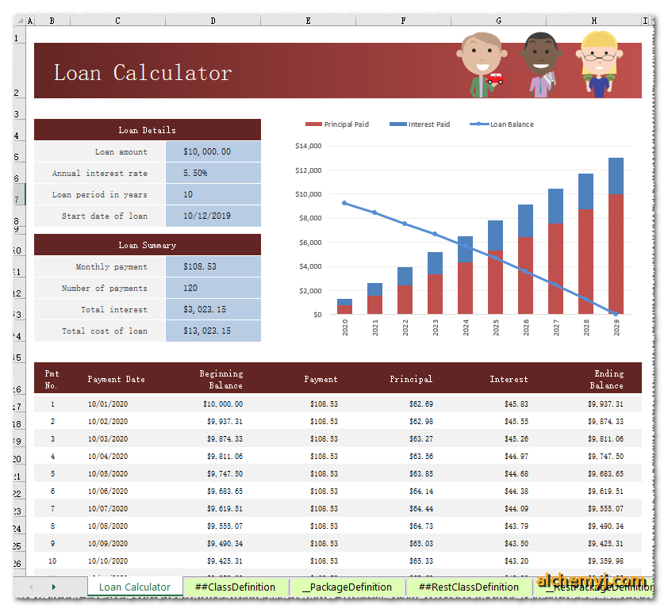
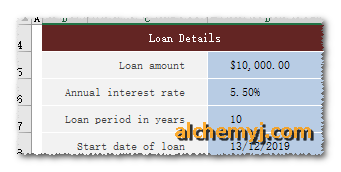

When there are too many data need to input or output
Here is a worksheet has built up the Loan Calculation Logic already. User input the Loan Details, the excel will calculate the Payment details. So it should be two objects in this sample. Loan and Payment. Both Input and output are not a single cell.

Firstly, define the function name as loancalculator. The input are four properties of Loan, then add four rows in the Functions Input Parameters of Class Definition worksheet and the setup as below

| Method Name | Parameter Type | Parameter Class | Parameter Name | Write to Cell Address | Object Extraction JsonPath | Extraction Value Type | Extraction Value Type |
|---|---|---|---|---|---|---|---|
| loancalculator | Object | Loan | loanamt | Loan Calculator!D5 | $.loanamt | Double | |
| loancalculator | Object | Loan | intrate | Loan Calculator!D6 | $.intrate | Double | |
| loancalculator | Object | Loan | loanperiod | Loan Calculator!D7 | $.loanperiod | Integer | |
| loancalculator | Object | Loan | startdate | Loan Calculator!D8 | $.startdate | Date | YYYY/MM/DD |
Secondly, define the output in Functions section of Class Definition Worksheet. The return result of the business logic is a payment list. The list size is Loan Period in Years * 12.
| Function Point | Method Name | Return Type | Return Class | Return Value Cell Address | List Row Size |
|---|---|---|---|---|---|
| Get Payment List | getpaymentlist | Object List | payment | Loan Calculator!B15 | 120 |
Please note that AlchemyJ will only return the result range defined in the Function. For example, the size of return result is 50 but we only define the list row size is 20 in Functions. Then we will only can get 20 records for the function return. It is not recommended to use very large list size by default, it will waste the resource to handle those unused cells. It is better to use looping to get data page by page.